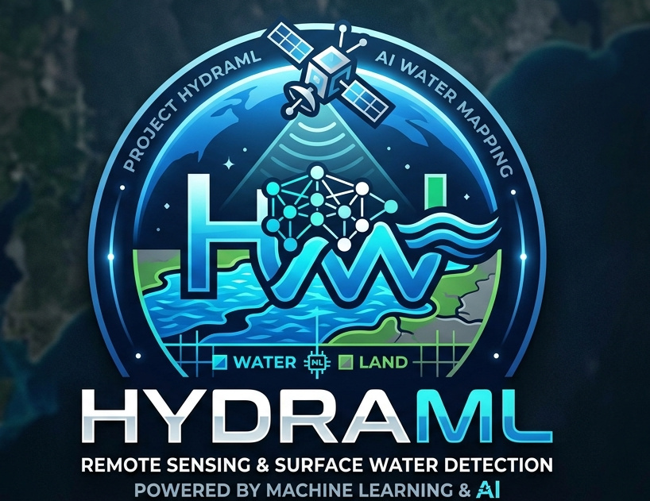

MicroBlast: Disaster Risk Assessment from Space
Computer vision and minimal-supervision learning approaches to assess structural damage and monitor mass movement risk using satellite and aerial imagery in disaster-affected regions.
Computer vision and minimal-supervision learning approaches to assess structural damage and monitor mass movement risk using satellite and aerial imagery in disaster-affected regions.

Foundation model embeddings from AlphaEarth combined with leave-one-region-out validation to enable spatially transferable water body classification across diverse geographic contexts globally.

Integrating geospatial open-source information into a user-friendly platform that generates reference and preliminary situational awareness maps in time for search and rescue deployment.

Harnessing multi-source remote sensing data and AI to predict and monitor soil organic carbon stocks for scalable soil health, climate, agriculture, and carbon sequestration applications.